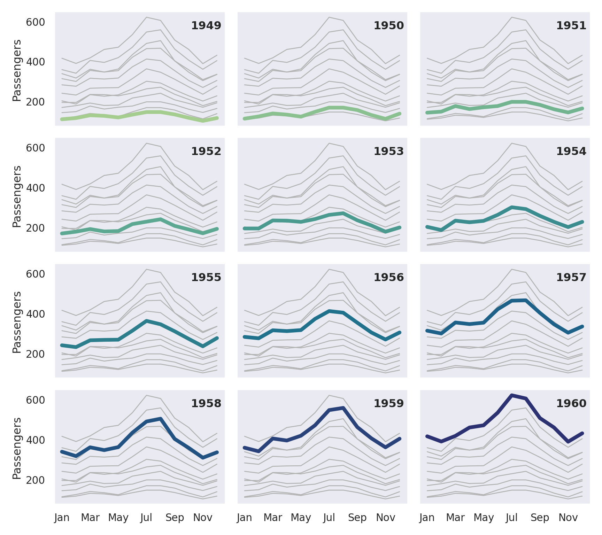
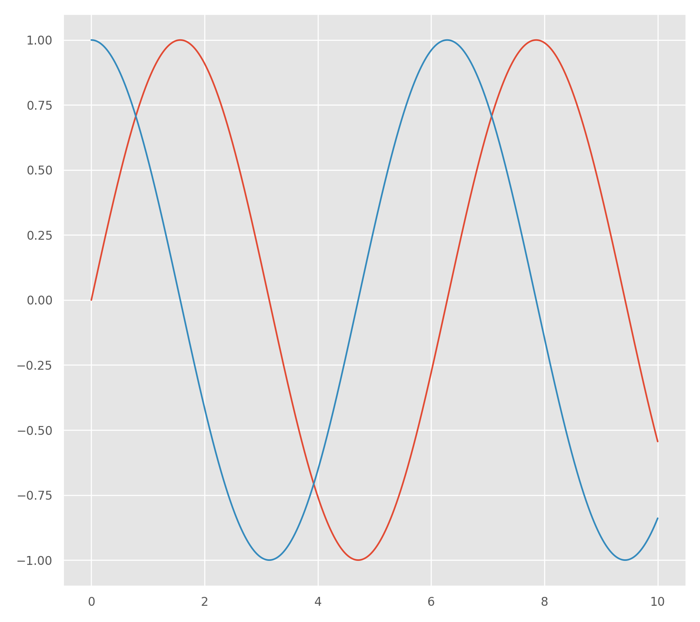
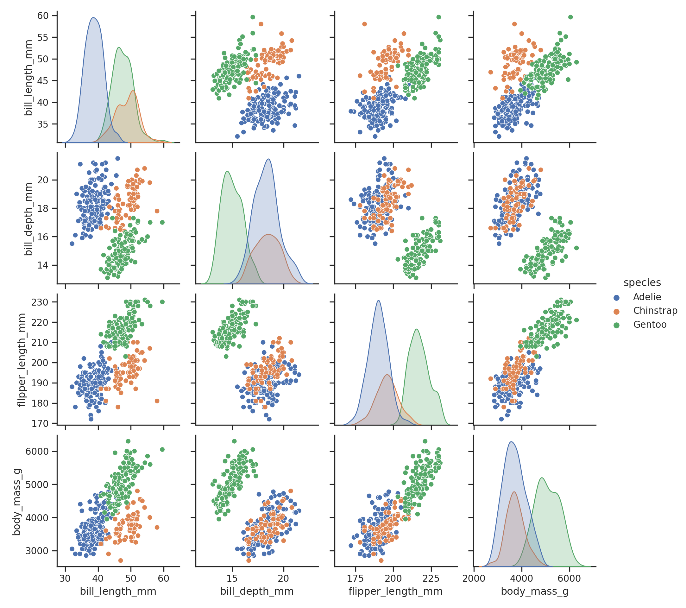

Ch. 7 Seaborn
R
library(reticulate)
use_condaenv("r-python", required = TRUE)Python
# https://seaborn.pydata.org/examples/errorband_lineplots.html
import matplotlib.pyplot as plt
import seaborn as sns
sns.set_theme(style="darkgrid")
# Load an example dataset with long-form data
fmri = sns.load_dataset("fmri")
# Plot the responses for different events and regions
sns.lineplot(x="timepoint", y="signal",
hue="region", style="event",
data=fmri)
plt.show()Python
# https://seaborn.pydata.org/examples/horizontal_boxplot.html
import seaborn as sns
import matplotlib.pyplot as plt
sns.set_theme(style="ticks")
# Initialize the figure with a logarithmic x axis
f, ax = plt.subplots(figsize=(7, 6))
ax.set_xscale("log")
# Load the example planets dataset
planets = sns.load_dataset("planets")
# Plot the orbital period with horizontal boxes
sns.boxplot(x="distance", y="method", data=planets,
whis=[0, 100], width=.6, palette="vlag")
# Add in points to show each observation
sns.stripplot(x="distance", y="method", data=planets,
size=4, color=".3", linewidth=0)
# Tweak the visual presentation
ax.xaxis.grid(True)
ax.set(ylabel="")
sns.despine(trim=True, left=True)
plt.show()# https://seaborn.pydata.org/examples/timeseries_facets.html
import matplotlib.pyplot as plt
import seaborn as sns
sns.set_theme(style="dark")
flights = sns.load_dataset("flights")
# Plot each year's time series in its own facet
g = sns.relplot(
data=flights,
x="month", y="passengers", col="year", hue="year",
kind="line", palette="crest", linewidth=4, zorder=5,
col_wrap=3, height=2, aspect=1.5, legend=False,
)
# Iterate over each subplot to customize further
for year, ax in g.axes_dict.items():
# Add the title as an annotation within the plot
ax.text(.8, .85, year, transform=ax.transAxes, fontweight="bold")
# Plot every year's time series in the background
sns.lineplot(
data=flights, x="month", y="passengers", units="year",
estimator=None, color=".7", linewidth=1, ax=ax,
)
# Reduce the frequency of the x axis ticks
ax.set_xticks(ax.get_xticks()[::2])
# Tweak the supporting aspects of the plot
g.set_titles("")
g.set_axis_labels("", "Passengers")
g.tight_layout()
plt.show()
from __future__ import print_function, division
import matplotlib.pyplot as plt
import numpy as np
import pandas as pd
x = np.linspace(0, 10, 1000)
plt.style.use('ggplot')
plt.plot(x, np.sin(x), x, np.cos(x));
plt.show()
# https://seaborn.pydata.org/examples/scatterplot_matrix.html
import matplotlib.pyplot as plt
import seaborn as sns
sns.set_theme(style="ticks")
df = sns.load_dataset("penguins")
sns.pairplot(df, hue="species")
plt.show()
import numpy as np
import pandas as pd
import matplotlib.pyplot as plt
import seaborn as sns
sns.set_theme(style="darkgrid")
tips = sns.load_dataset("tips")
fmri = sns.load_dataset("fmri")
sns.relplot(x="timepoint", y="signal", hue="event", style="event",
col="subject", col_wrap=5,
height=3, aspect=.75, linewidth=2.5,
kind="line", data=fmri.query("region == 'frontal'"));
plt.show()